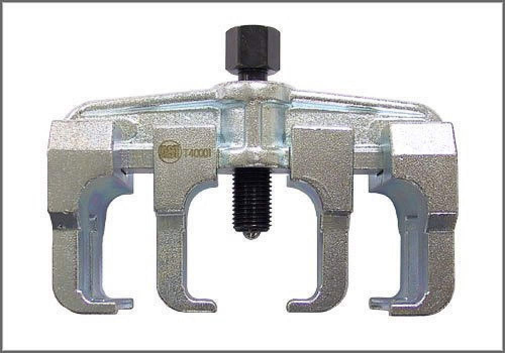
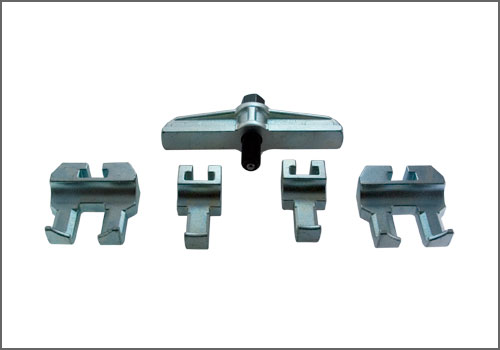
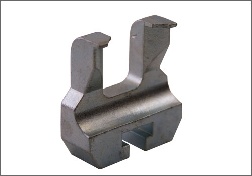

Puller - AST Tool # T 40001
Puller
AST tool# T 40001


Puller used to remove cam sprockets. Comparable to VW # 3032. Applicable: VW 4 cylinder TDI, VW/Audi V6(5V) and Audi V8 (40V). Includes 17mm and 23mm pulling arms. (For 2.0L 4V Direct Injection Engine (BPY)(BPG)(BWT), order additional arms; T 40001-6 and T 40001-7, available separately.)
- Used to Remove Cam Sprockets
- Comparable to VW # 3032
- Includes 17mm and 23mm pulling arms
Contact AST for pricing.
Assenmacher Specialty Tools
1-800-525-2943
Additional Tools Possibly Required:

T 40001-6 - Puller Claw for VW 2.0 Turbo - Accessory Arm (25mm spread)

T 40001-7 - Puller Claw for VW 2.0 Turbo; Accessory Arm